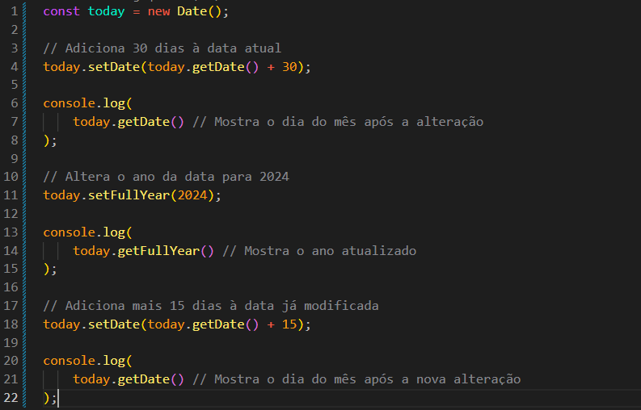
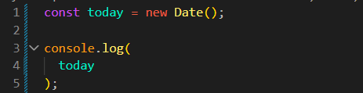

Date
Intro
Agora iremos dar uma olhada em algumas classes de objetos incorporadas.
Agora iremos dar uma olhada em algumas classes de objetos incorporadas.
JS:

Em JavaScript, podemos trabalhar com datas usando a classe Date. Para obter a data e a hora atuais, usamos new Date().
const today = new Date();
console.log(
today
);

Ao executar esse código, o DevTools mostrará a data e a hora atuais, incluindo o fuso horário.
A variável today guarda um objeto de data. Esse objeto possui métodos que permitem consultar e modificar informações como ano, mês, dia e hora.
Exemplo:
// getFullYear() -> Retorna o ano da data console.log( today.getFullYear() );
Além do ano, podemos consultar o mês, o dia, o dia da semana e os horários usando outros métodos, como getMonth(), getDate(), getDay() e getHours().
Também podemos modificar uma data usando métodos que começam com set. Por exemplo, setFullYear() altera o ano da data armazenada no objeto.
// Altera o ano para 2025 today.setFullYear(2025); console.log( today.getFullYear() );
// Adiciona 15 dias à data armazenada em today today.setDate(today.getDate() + 15); console.log( today );
No segundo exemplo, primeiro usamos getDate() para obter o dia atual. Depois, somamos 15 e usamos setDate() para atualizar a data.
Se o resultado ultrapassar o último dia do mês, o JavaScript ajustará automaticamente o mês e, se necessário, o ano. Por isso, não precisamos calcular essas mudanças manualmente.
Podemos consultar o mês atualizado usando today.getMonth(). Porém, precisamos lembrar que os meses começam em 0 no JavaScript: janeiro é 0, fevereiro é 1 e dezembro é 11.
Além dos métodos usados em objetos de data, a classe Date também possui métodos estáticos. Eles são chamados diretamente pela classe, sem precisar criar um objeto. Um exemplo é Date.now().
// Retorna os milissegundos desde 1º de janeiro de 1970 console.log( Date.now() );
Esse valor representa o tempo passado desde 1º de janeiro de 1970, às 00:00:00 UTC, em milissegundos. Ele não é uma data formatada para leitura humana.
Para transformar esse valor em um objeto de data, podemos usar new Date().
// Converte os milissegundos em um objeto de data console.log( new Date(Date.now()) );
Outro método estático é Date.parse(). Ele recebe um texto que representa uma data reconhecida e retorna o tempo correspondente em milissegundos desde 1º de janeiro de 1970.
// Converte uma data em texto para milissegundos console.log( Date.parse('2026-10-02') );// Cria um objeto de data a partir do mesmo texto console.log( new Date('2026-10-02') );
A diferença é que Date.parse() retorna um número, enquanto new Date() cria um objeto de data. Assim, podemos escolher o método de acordo com o que precisamos fazer.